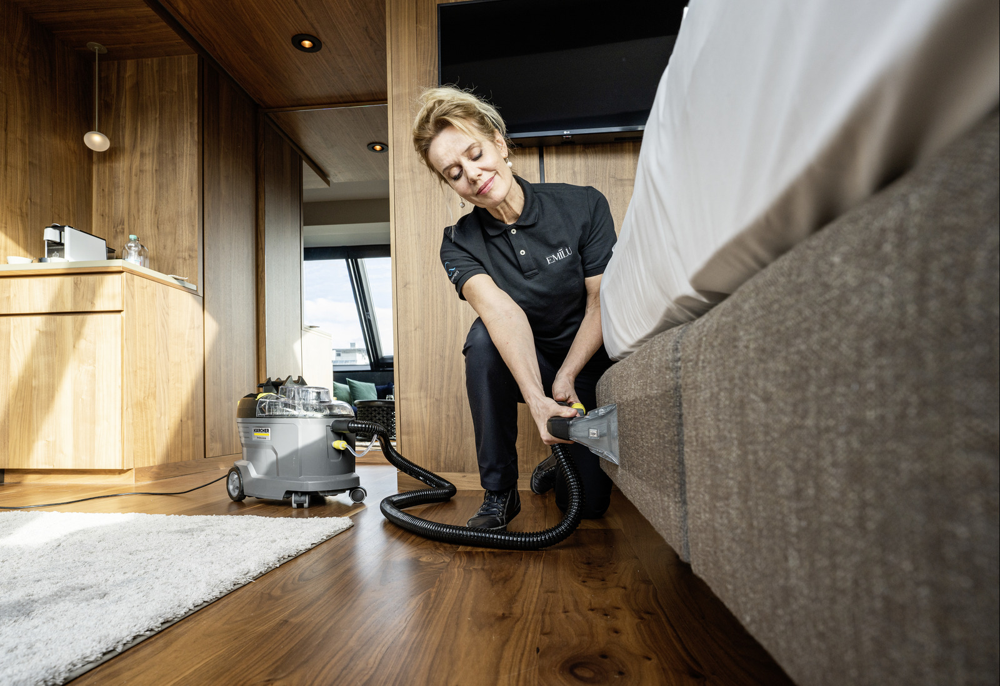

01 — Textile
Kärcher Puzzi 8/1
Shampouineuse injection/extraction — textiles d’ameublement et moquettes.

Location de machines de nettoyage · Lausanne
Canapé, fauteuil, moquette : commencez par la surface à nettoyer. Louez la machine adaptée à Lausanne, dès 35 CHF.
Dès 35 CHF · tarifs indicatifs, confirmés selon la durée
Le bon départ
Un canapé textile n’appelle pas la même machine qu’un joint ou une terrasse. Dites ce que vous nettoyez ; le formulaire propose aussi « Je ne sais pas — besoin d’un conseil ».
Décrire ma surfaceTextile, joint ou sol extérieur : une surface précise, pas un SKU à deviner.
Le Puzzi 8/1 pour l’injection-extraction textile ; vapeur et haute pression selon le besoin.
Une surface nettoyée avec l’outil adapté. Pas de promesse de résultat identique : cela dépend du textile, de la tache et du geste.
Après le besoin
Vous partez d’une surface, d’une tache ou d’un usage — sans connaître le modèle.
Vous composez votre demande localement. Le site ne la transmet pas automatiquement.
L’opérateur répond sur le canal convenu (hors site tant que le canal public n’est pas branché).
Lausanne, sur rendez-vous. Caution et paiement sont expliqués avant la remise.
Location, pas stockage
Besoin ponctuel : canapé, moquette, joints, terrasse, après travaux. Vous emportez une machine professionnelle contrôlée, avec les consignes pour bien l’utiliser. Vous la ramenez. Pas d’achat, pas de place perdue au sous-sol.
Parc
01 — Textile
Shampouineuse injection/extraction — textiles d’ameublement et moquettes.

02 — Textile
Shampouineuse injection/extraction à batterie — variante du parc textile.


04 — Haute pression
Haute pression eau froide — terrasses, sols extérieurs, véhicules.
Tarifs indicatifs issus des annonces actuelles. Montant et durée exacts confirmés lors de la demande. Aucune autre machine n’est présentée comme disponible sur ce site.
Transparence
FAQ